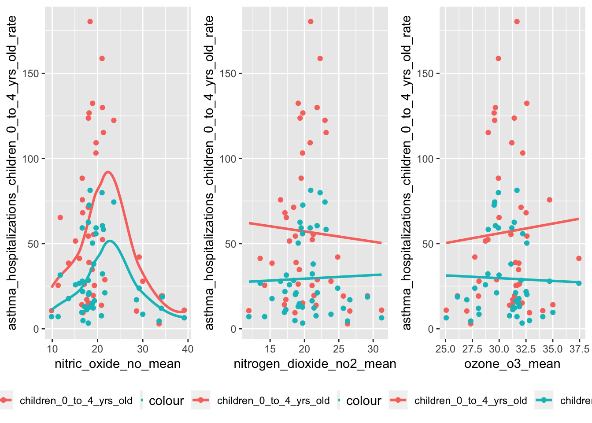
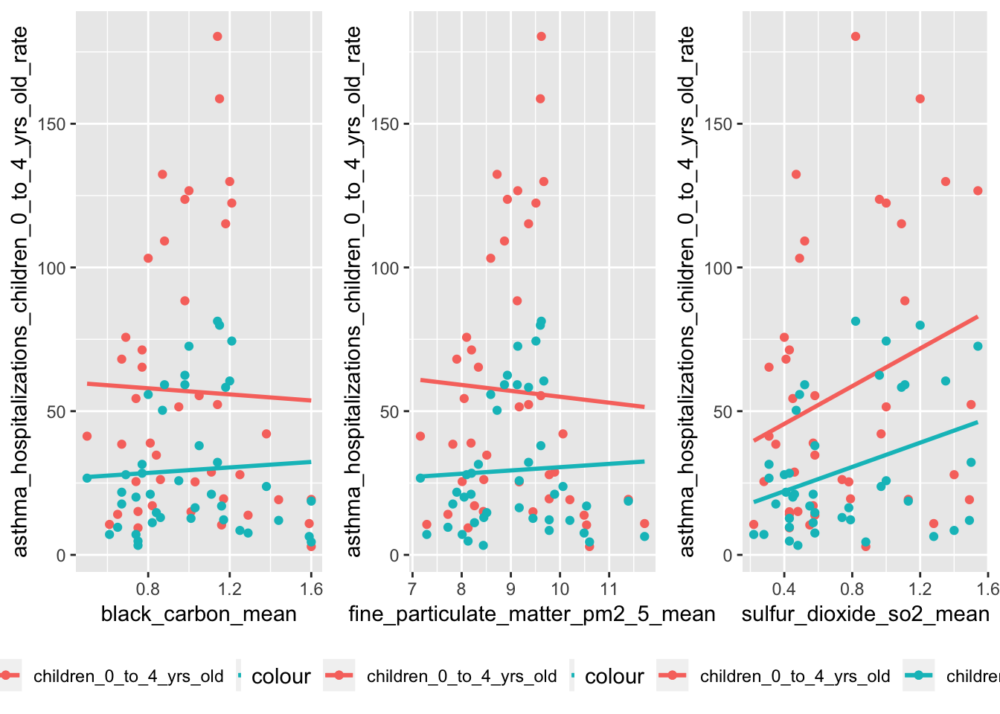
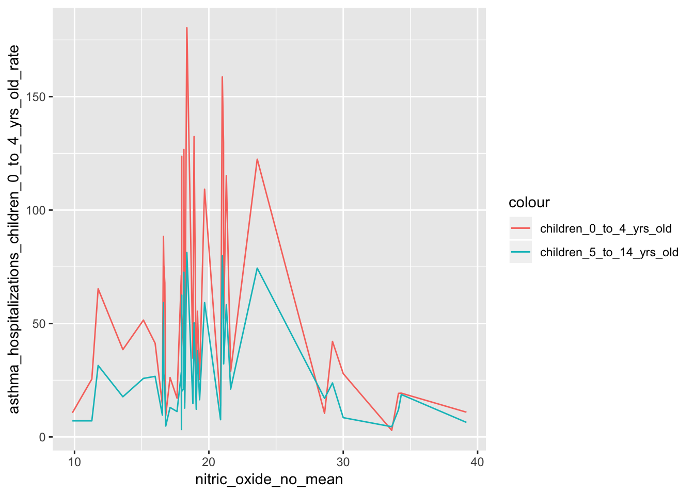
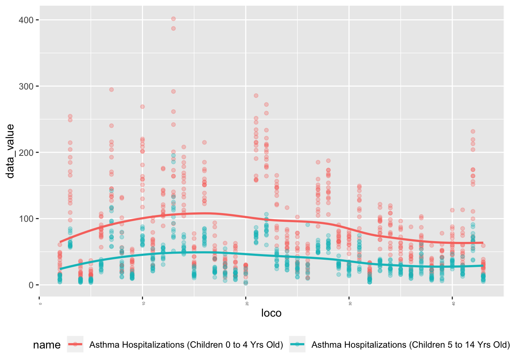
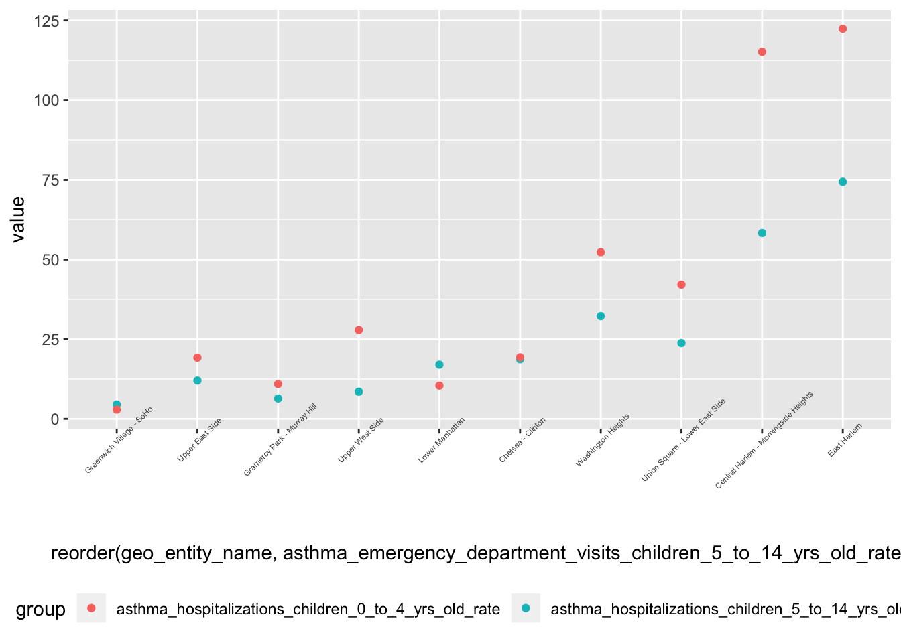
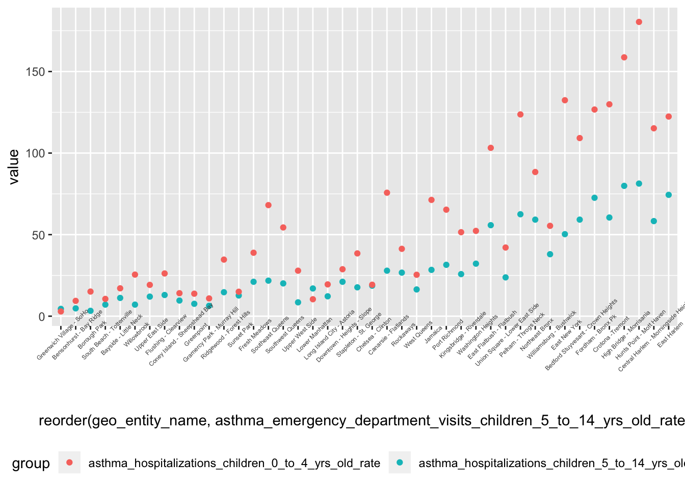
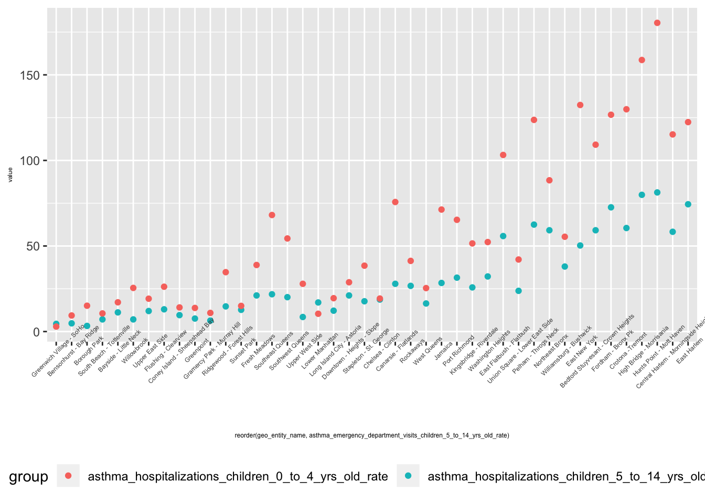
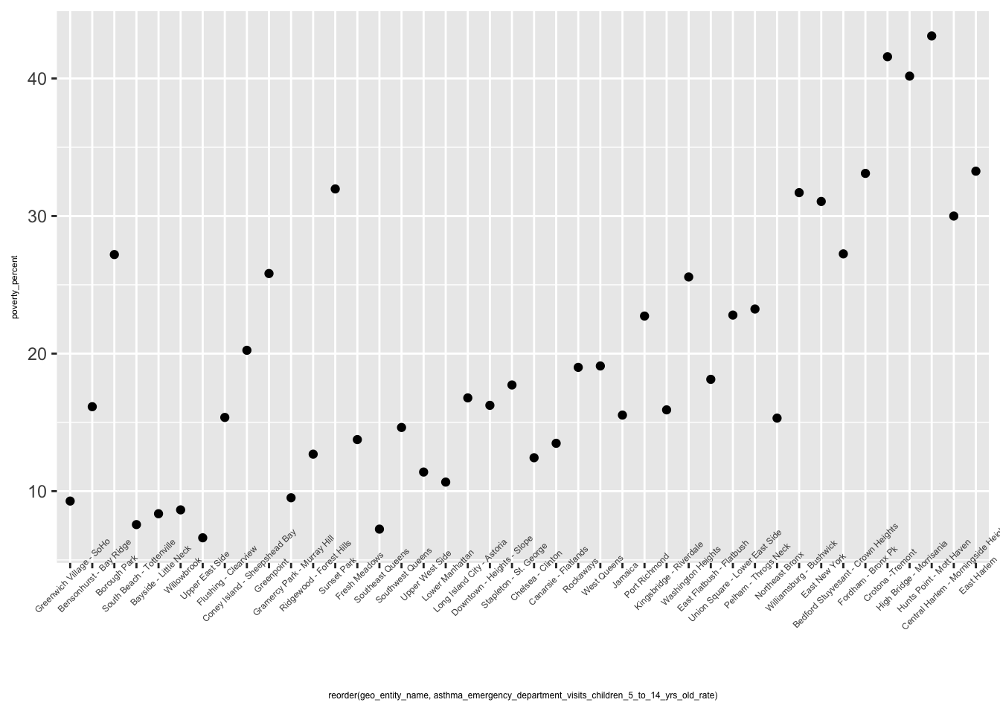

asthma = read.csv("./data/asthma_air/Data.csv")
asthma %>%
distinct(name) %>% pull()## [1] Fine Particulate Matter (PM2.5)
## [2] Black Carbon
## [3] Nitrogen Dioxide (NO2)
## [4] Sulfur Dioxide (SO2)
## [5] Ozone (O3)
## [6] Nitric Oxide (NO)
## [7] Asthma Hospitalizations (Children 0 to 4 Yrs Old)
## [8] Asthma Hospitalizations (Children 5 to 14 Yrs Old)
## [9] Adults with Asthma in the Past 12 Months
## [10] Asthma Hospitalizations (Youths and Adults)
## [11] Asthma Emergency Department Visits (Children 5 to 14 Yrs Old)
## [12] Asthma Emergency Department Visits (Youths and Adults)
## [13] Asthma Emergency Department Visits (Children 0 to 4 Yrs Old)
## [14]
## 14 Levels: ... Sulfur Dioxide (SO2)asthma_air = read_csv("./data/asthma_air/Data.csv") %>%
filter(str_detect(year_description, "^20|^An")) %>%
mutate(year_description = str_remove(year_description, "Annual Average ")) %>%
filter(year_description == 2015)## Warning: Missing column names filled in: 'X16' [16]## Parsed with column specification:
## cols(
## `Unique Id` = col_integer(),
## indicator_id = col_integer(),
## geo_type_id = col_integer(),
## measurement_type_id = col_integer(),
## internal_id = col_integer(),
## subtopic_id = col_integer(),
## name = col_character(),
## Measure = col_character(),
## geo_type_name = col_character(),
## description = col_character(),
## geo_entity_id = col_integer(),
## geo_entity_name = col_character(),
## year_description = col_character(),
## data_value = col_double(),
## message = col_character(),
## X16 = col_character()
## )## Warning in rbind(names(probs), probs_f): number of columns of result is not
## a multiple of vector length (arg 1)## Warning: 6 parsing failures.
## row # A tibble: 5 x 5 col row col expected actual file expected <int> <chr> <chr> <chr> <chr> actual 1 19069 Unique~ an integ~ NYC Department of Health and Me~ './data/asthma~ file 2 19069 <NA> 16 colum~ 1 columns './data/asthma~ row 3 19070 Unique~ an integ~ Environment & Health Data Portal './data/asthma~ col 4 19070 <NA> 16 colum~ 1 columns './data/asthma~ expected 5 19071 Unique~ an integ~ Available at: http://nyc.gov/he~ './data/asthma~
## ... ................. ... .......................................................................... ........ .......................................................................... ...... .......................................................................... .... .......................................................................... ... .......................................................................... ... .......................................................................... ........ ..........................................................................
## See problems(...) for more details.sulfur_dioxide= read_csv("./data/asthma_air/Data.csv") %>%
filter(name == "Sulfur Dioxide (SO2)") %>%
filter(year_description == "Winter 2014-15")## Warning: Missing column names filled in: 'X16' [16]## Parsed with column specification:
## cols(
## `Unique Id` = col_integer(),
## indicator_id = col_integer(),
## geo_type_id = col_integer(),
## measurement_type_id = col_integer(),
## internal_id = col_integer(),
## subtopic_id = col_integer(),
## name = col_character(),
## Measure = col_character(),
## geo_type_name = col_character(),
## description = col_character(),
## geo_entity_id = col_integer(),
## geo_entity_name = col_character(),
## year_description = col_character(),
## data_value = col_double(),
## message = col_character(),
## X16 = col_character()
## )## Warning in rbind(names(probs), probs_f): number of columns of result is not a multiple of vector length (arg 1)
## Warning in rbind(names(probs), probs_f): 6 parsing failures.
## row # A tibble: 5 x 5 col row col expected actual file expected <int> <chr> <chr> <chr> <chr> actual 1 19069 Unique~ an integ~ NYC Department of Health and Me~ './data/asthma~ file 2 19069 <NA> 16 colum~ 1 columns './data/asthma~ row 3 19070 Unique~ an integ~ Environment & Health Data Portal './data/asthma~ col 4 19070 <NA> 16 colum~ 1 columns './data/asthma~ expected 5 19071 Unique~ an integ~ Available at: http://nyc.gov/he~ './data/asthma~
## ... ................. ... .......................................................................... ........ .......................................................................... ...... .......................................................................... .... .......................................................................... ... .......................................................................... ... .......................................................................... ........ ..........................................................................
## See problems(...) for more details.ozone= read_csv("./data/asthma_air/Data.csv") %>%
filter(name == "Ozone (O3)") %>%
filter(year_description == "Summer 2015")## Warning: Missing column names filled in: 'X16' [16]## Parsed with column specification:
## cols(
## `Unique Id` = col_integer(),
## indicator_id = col_integer(),
## geo_type_id = col_integer(),
## measurement_type_id = col_integer(),
## internal_id = col_integer(),
## subtopic_id = col_integer(),
## name = col_character(),
## Measure = col_character(),
## geo_type_name = col_character(),
## description = col_character(),
## geo_entity_id = col_integer(),
## geo_entity_name = col_character(),
## year_description = col_character(),
## data_value = col_double(),
## message = col_character(),
## X16 = col_character()
## )## Warning in rbind(names(probs), probs_f): number of columns of result is not a multiple of vector length (arg 1)
## Warning in rbind(names(probs), probs_f): 6 parsing failures.
## row # A tibble: 5 x 5 col row col expected actual file expected <int> <chr> <chr> <chr> <chr> actual 1 19069 Unique~ an integ~ NYC Department of Health and Me~ './data/asthma~ file 2 19069 <NA> 16 colum~ 1 columns './data/asthma~ row 3 19070 Unique~ an integ~ Environment & Health Data Portal './data/asthma~ col 4 19070 <NA> 16 colum~ 1 columns './data/asthma~ expected 5 19071 Unique~ an integ~ Available at: http://nyc.gov/he~ './data/asthma~
## ... ................. ... .......................................................................... ........ .......................................................................... ...... .......................................................................... .... .......................................................................... ... .......................................................................... ... .......................................................................... ........ ..........................................................................
## See problems(...) for more details.poverty= read_csv("./data/poverty/Data.csv") %>%
filter(year_description == "2011-15" )## Warning: Missing column names filled in: 'X16' [16]## Parsed with column specification:
## cols(
## `Unique Id` = col_character(),
## indicator_id = col_integer(),
## geo_type_id = col_integer(),
## measurement_type_id = col_integer(),
## internal_id = col_integer(),
## subtopic_id = col_integer(),
## name = col_character(),
## Measure = col_character(),
## geo_type_name = col_character(),
## description = col_character(),
## geo_entity_id = col_integer(),
## geo_entity_name = col_character(),
## year_description = col_character(),
## data_value = col_double(),
## message = col_character(),
## X16 = col_character()
## )## Warning in rbind(names(probs), probs_f): number of columns of result is not
## a multiple of vector length (arg 1)## Warning: 3 parsing failures.
## row # A tibble: 3 x 5 col row col expected actual file expected <int> <chr> <chr> <chr> <chr> actual 1 841 <NA> 16 columns 1 columns './data/poverty/Data.csv' file 2 842 <NA> 16 columns 1 columns './data/poverty/Data.csv' row 3 843 <NA> 16 columns 1 columns './data/poverty/Data.csv'smoke = read_csv("./data/smoking_exer/Data.csv") %>%
filter(year_description == "2015" )## Warning: Missing column names filled in: 'X16' [16]## Parsed with column specification:
## cols(
## `Unique Id` = col_integer(),
## indicator_id = col_integer(),
## geo_type_id = col_integer(),
## measurement_type_id = col_integer(),
## internal_id = col_integer(),
## subtopic_id = col_integer(),
## name = col_character(),
## Measure = col_character(),
## geo_type_name = col_character(),
## description = col_character(),
## geo_entity_id = col_integer(),
## geo_entity_name = col_character(),
## year_description = col_integer(),
## data_value = col_double(),
## message = col_character(),
## X16 = col_character()
## )## Warning in rbind(names(probs), probs_f): number of columns of result is not
## a multiple of vector length (arg 1)## Warning: 6 parsing failures.
## row # A tibble: 5 x 5 col row col expected actual file expected <int> <chr> <chr> <chr> <chr> actual 1 1051 Unique~ an integ~ NYC Department of Health and Me~ './data/smokin~ file 2 1051 <NA> 16 colum~ 1 columns './data/smokin~ row 3 1052 Unique~ an integ~ Environment & Health Data Portal './data/smokin~ col 4 1052 <NA> 16 colum~ 1 columns './data/smokin~ expected 5 1053 Unique~ an integ~ Available at: http://nyc.gov/he~ './data/smokin~
## ... ................. ... .......................................................................... ........ .......................................................................... ...... .......................................................................... .... .......................................................................... ... .......................................................................... ... .......................................................................... ........ ..........................................................................
## See problems(...) for more details.data = rbind(asthma_air,sulfur_dioxide,ozone, poverty, smoke)
asthma_air1 = data %>%
select(name, description, Measure, geo_entity_name, geo_entity_id, year = year_description, data_value) %>%
janitor::clean_names() %>%
filter(measure %in% c("Mean", "Rate", "Number", "Percent", "Age-Adjusted Percent", "Age-Adjusted Rate ")) %>%
mutate(name_measure=str_c(name,"-",measure)) %>%
select(-name, -measure, -description, -year) %>%
spread(key = name_measure, value = data_value) asthma_air1 = asthma_air1 %>%
janitor::clean_names()
NO = ggplot(asthma_air1)+
geom_point(aes(x = nitric_oxide_no_mean, y =asthma_hospitalizations_children_0_to_4_yrs_old_rate,color = "children_0_to_4_yrs_old"))+
geom_smooth(aes(x = nitric_oxide_no_mean, y = asthma_hospitalizations_children_0_to_4_yrs_old_rate,color = "children_0_to_4_yrs_old"),se =FALSE) +
geom_point(aes(x = nitric_oxide_no_mean, y = asthma_hospitalizations_children_5_to_14_yrs_old_rate,color = "children_5_to_14_yrs_old"))+
geom_smooth(aes(x = nitric_oxide_no_mean, y = asthma_hospitalizations_children_5_to_14_yrs_old_rate,color = "children_5_to_14_yrs_old"),se =FALSE) +
theme(legend.position ="bottom")O3= asthma_air1 %>%
ggplot()+
geom_point(aes(x = ozone_o3_mean, y =asthma_hospitalizations_children_0_to_4_yrs_old_rate,color = "children_0_to_4_yrs_old"))+
geom_smooth(aes(x = ozone_o3_mean, y =asthma_hospitalizations_children_0_to_4_yrs_old_rate,color = "children_0_to_4_yrs_old"),method = lm,se = FALSE)+
geom_point(aes(x = ozone_o3_mean, y = asthma_hospitalizations_children_5_to_14_yrs_old_rate,color = "children_4_to_14_yrs_old"))+
geom_smooth(aes(x = ozone_o3_mean, y = asthma_hospitalizations_children_5_to_14_yrs_old_rate,color = "children_4_to_14_yrs_old"),method = lm,se =FALSE) +
theme(legend.position ="bottom") NO2 = ggplot(asthma_air1)+
geom_point(aes(x = nitrogen_dioxide_no2_mean, y =asthma_hospitalizations_children_0_to_4_yrs_old_rate,color = "children_0_to_4_yrs_old"))+
geom_smooth(aes(x = nitrogen_dioxide_no2_mean, y = asthma_hospitalizations_children_0_to_4_yrs_old_rate,color = "children_0_to_4_yrs_old"),method = lm,se =FALSE) +
geom_point(aes(x = nitrogen_dioxide_no2_mean, y = asthma_hospitalizations_children_5_to_14_yrs_old_rate,color = "children_5_to_14_yrs_old"))+
geom_smooth(aes(x = nitrogen_dioxide_no2_mean, y = asthma_hospitalizations_children_5_to_14_yrs_old_rate,color = "children_5_to_14_yrs_old"),method = lm,se =FALSE) +
theme(legend.position ="bottom") SO2 = ggplot(asthma_air1)+
geom_point(aes(x = sulfur_dioxide_so2_mean, y =asthma_hospitalizations_children_0_to_4_yrs_old_rate,color = "children_0_to_4_yrs_old"))+
geom_smooth(aes(x = sulfur_dioxide_so2_mean, y = asthma_hospitalizations_children_0_to_4_yrs_old_rate,color = "children_0_to_4_yrs_old"),method = lm,se =FALSE) +
geom_point(aes(x = sulfur_dioxide_so2_mean, y = asthma_hospitalizations_children_5_to_14_yrs_old_rate,color = "children_5_to_14_yrs_old"))+
geom_smooth(aes(x = sulfur_dioxide_so2_mean, y = asthma_hospitalizations_children_5_to_14_yrs_old_rate,color = "children_5_to_14_yrs_old"),method = lm,se =FALSE) +
theme(legend.position ="bottom")
ggplotly(SO2) pm2.5 = ggplot(asthma_air1)+
geom_point(aes(x = fine_particulate_matter_pm2_5_mean, y =asthma_hospitalizations_children_0_to_4_yrs_old_rate,color = "children_0_to_4_yrs_old"))+
geom_smooth(aes(x = fine_particulate_matter_pm2_5_mean, y = asthma_hospitalizations_children_0_to_4_yrs_old_rate,color = "children_0_to_4_yrs_old"),method = lm,se =FALSE) +
geom_point(aes(x = fine_particulate_matter_pm2_5_mean, y = asthma_hospitalizations_children_5_to_14_yrs_old_rate,color = "children_5_to_14_yrs_old"))+
geom_smooth(aes(x = fine_particulate_matter_pm2_5_mean, y = asthma_hospitalizations_children_5_to_14_yrs_old_rate,color = "children_5_to_14_yrs_old"),method = lm,se =FALSE) +
theme(legend.position ="bottom") black_carbon =ggplot(asthma_air1)+
geom_point(aes(x = black_carbon_mean, y =asthma_hospitalizations_children_0_to_4_yrs_old_rate,color = "children_0_to_4_yrs_old"))+
geom_smooth(aes(x = black_carbon_mean, y = asthma_hospitalizations_children_0_to_4_yrs_old_rate,color = "children_0_to_4_yrs_old"),method = lm,se =FALSE) +
geom_point(aes(x = black_carbon_mean, y = asthma_hospitalizations_children_5_to_14_yrs_old_rate,color = "children_5_to_14_yrs_old"))+
geom_smooth(aes(x = black_carbon_mean, y = asthma_hospitalizations_children_5_to_14_yrs_old_rate,color = "children_5_to_14_yrs_old"),method = lm,se =FALSE)+
theme(legend.position ="bottom")NO+NO2+O3## `geom_smooth()` using method = 'loess' and formula 'y ~ x'
## `geom_smooth()` using method = 'loess' and formula 'y ~ x'
black_carbon+pm2.5+SO2
asthma_air1 = asthma_air1 %>%
janitor::clean_names()
ggplot(asthma_air1)+
geom_line(aes(x = nitric_oxide_no_mean, y =asthma_hospitalizations_children_0_to_4_yrs_old_rate,color = "children_0_to_4_yrs_old"))+
geom_line(aes(x = nitric_oxide_no_mean, y=asthma_hospitalizations_children_5_to_14_yrs_old_rate,color = "children_5_to_14_yrs_old"))
asthma %>%
filter(geo_type_name=="UHF42") %>%
filter(measurement_type_id == "1") %>% #precent#
filter(name == "Asthma Hospitalizations (Children 0 to 4 Yrs Old)"|name =="Asthma Hospitalizations (Children 5 to 14 Yrs Old)") %>%
#choose 5 geo_entity_name
#filter(geo_entity_name=="Rockaways"|geo_entity_name == "Port Richmond") %>%
mutate(
loco = as.numeric(geo_entity_name)
) %>%
ggplot(aes(x = loco, y = data_value,color = name))+geom_point(alpha = 0.3)+geom_smooth(se = FALSE)+
theme(axis.text.x = element_text(angle = 90,size = 3.5))+ theme(legend.position = "bottom")## `geom_smooth()` using method = 'loess' and formula 'y ~ x'## Warning: Removed 27 rows containing non-finite values (stat_smooth).## Warning: Removed 27 rows containing missing values (geom_point).
so2_child_reg = lm(asthma_hospitalizations_children_5_to_14_yrs_old_rate~sulfur_dioxide_so2_mean,data = asthma_air1) %>% broom::tidy()
###pm2.5
pm2.5_child_reg = lm(asthma_hospitalizations_children_5_to_14_yrs_old_rate~fine_particulate_matter_pm2_5_mean,data = asthma_air1)%>% broom::tidy()
###no
no_child_reg = lm(asthma_hospitalizations_children_5_to_14_yrs_old_rate~nitric_oxide_no_mean,data = asthma_air1)%>% broom::tidy()
###no2
no2_child_reg = lm(asthma_hospitalizations_children_5_to_14_yrs_old_rate~nitrogen_dioxide_no2_mean,data = asthma_air1)%>% broom::tidy()
###o3
o3_child_reg = lm(asthma_hospitalizations_children_5_to_14_yrs_old_rate~ozone_o3_mean,data = asthma_air1)%>% broom::tidy()
bind_rows(so2_child_reg,pm2.5_child_reg,no_child_reg,no2_child_reg,o3_child_reg) %>%
filter(term != "(Intercept)") %>%
mutate(
term = str_replace(term,"_mean","")
) %>%
select(term,p.value) %>%
knitr::kable(caption = "p.value of different air pollutants in linear modeling asthma hospitalizations rate children (5_to_14_yrs old)")| term | p.value |
|---|---|
| sulfur_dioxide_so2 | 0.0253949 |
| fine_particulate_matter_pm2_5 | 0.7488408 |
| nitric_oxide_no | 0.4459874 |
| nitrogen_dioxide_no2 | 0.8222991 |
| ozone_o3 | 0.8343382 |
so2_child_reg1 = lm(asthma_hospitalizations_children_0_to_4_yrs_old_rate~sulfur_dioxide_so2_mean,data = asthma_air1) %>% broom::tidy()
###pm2.5
pm2.5_child_reg1 = lm(asthma_hospitalizations_children_0_to_4_yrs_old_rate~fine_particulate_matter_pm2_5_mean,data = asthma_air1)%>% broom::tidy()
###no
no_child_reg1 = lm(asthma_hospitalizations_children_0_to_4_yrs_old_rate~nitric_oxide_no_mean,data = asthma_air1)%>% broom::tidy()
###no2
no2_child_reg1 = lm(asthma_hospitalizations_children_0_to_4_yrs_old_rate~nitrogen_dioxide_no2_mean,data = asthma_air1)%>% broom::tidy()
###o3
o3_child_reg1 = lm(asthma_hospitalizations_children_0_to_4_yrs_old_rate~ozone_o3_mean,data = asthma_air1)%>% broom::tidy()
bind_rows(so2_child_reg1,pm2.5_child_reg1,no_child_reg1,no2_child_reg1,o3_child_reg1) %>%
filter(term != "(Intercept)") %>%
mutate(
term = str_replace(term,"_mean","")
) %>%
dplyr::select(term,p.value) %>%
knitr::kable(caption = "p.value of different air pollutants in linear modeling asthma hospitalizations rate children (0_to_4_yrs old)")| term | p.value |
|---|---|
| sulfur_dioxide_so2 | 0.0896538 |
| fine_particulate_matter_pm2_5 | 0.7750473 |
| nitric_oxide_no | 0.2405644 |
| nitrogen_dioxide_no2 | 0.7538892 |
| ozone_o3 | 0.7127516 |
so2_child_reg2 = lm(asthma_emergency_department_visits_children_5_to_14_yrs_old_rate~sulfur_dioxide_so2_mean,data = asthma_air1) %>% broom::tidy()pm2.5_child_reg2 = lm(asthma_emergency_department_visits_children_5_to_14_yrs_old_rate~fine_particulate_matter_pm2_5_mean,data = asthma_air1)
summary(pm2.5_child_reg2)##
## Call:
## lm(formula = asthma_emergency_department_visits_children_5_to_14_yrs_old_rate ~
## fine_particulate_matter_pm2_5_mean, data = asthma_air1)
##
## Residuals:
## Min 1Q Median 3Q Max
## -239.66 -125.75 -54.62 114.13 416.35
##
## Coefficients:
## Estimate Std. Error t value Pr(>|t|)
## (Intercept) -23.09 238.53 -0.097 0.923
## fine_particulate_matter_pm2_5_mean 27.53 26.13 1.054 0.298
##
## Residual standard error: 174.2 on 40 degrees of freedom
## Multiple R-squared: 0.027, Adjusted R-squared: 0.002679
## F-statistic: 1.11 on 1 and 40 DF, p-value: 0.2984no_child_reg2 = lm(asthma_emergency_department_visits_children_5_to_14_yrs_old_rate~nitric_oxide_no_mean,data = asthma_air1)
summary(no_child_reg2)##
## Call:
## lm(formula = asthma_emergency_department_visits_children_5_to_14_yrs_old_rate ~
## nitric_oxide_no_mean, data = asthma_air1)
##
## Residuals:
## Min 1Q Median 3Q Max
## -195.15 -114.89 -58.49 112.42 430.84
##
## Coefficients:
## Estimate Std. Error t value Pr(>|t|)
## (Intercept) 241.3962 92.1557 2.619 0.0124 *
## nitric_oxide_no_mean -0.7261 4.3271 -0.168 0.8676
## ---
## Signif. codes: 0 '***' 0.001 '**' 0.01 '*' 0.05 '.' 0.1 ' ' 1
##
## Residual standard error: 176.5 on 40 degrees of freedom
## Multiple R-squared: 0.0007034, Adjusted R-squared: -0.02428
## F-statistic: 0.02815 on 1 and 40 DF, p-value: 0.8676no2_child_reg2 = lm(asthma_emergency_department_visits_children_5_to_14_yrs_old_rate~nitrogen_dioxide_no2_mean,data = asthma_air1)
summary(no2_child_reg2)##
## Call:
## lm(formula = asthma_emergency_department_visits_children_5_to_14_yrs_old_rate ~
## nitrogen_dioxide_no2_mean, data = asthma_air1)
##
## Residuals:
## Min 1Q Median 3Q Max
## -236.8 -124.3 -61.8 114.2 411.1
##
## Coefficients:
## Estimate Std. Error t value Pr(>|t|)
## (Intercept) 90.622 145.403 0.623 0.537
## nitrogen_dioxide_no2_mean 6.673 7.010 0.952 0.347
##
## Residual standard error: 174.6 on 40 degrees of freedom
## Multiple R-squared: 0.02215, Adjusted R-squared: -0.002298
## F-statistic: 0.906 on 1 and 40 DF, p-value: 0.3469o3_child_reg2 = lm(asthma_emergency_department_visits_children_5_to_14_yrs_old_rate~ozone_o3_mean,data = asthma_air1)
summary(o3_child_reg2)##
## Call:
## lm(formula = asthma_emergency_department_visits_children_5_to_14_yrs_old_rate ~
## ozone_o3_mean, data = asthma_air1)
##
## Residuals:
## Min 1Q Median 3Q Max
## -232.14 -126.99 -63.51 111.24 416.31
##
## Coefficients:
## Estimate Std. Error t value Pr(>|t|)
## (Intercept) 536.51 349.98 1.533 0.133
## ozone_o3_mean -10.06 11.33 -0.888 0.380
##
## Residual standard error: 174.8 on 40 degrees of freedom
## Multiple R-squared: 0.01934, Adjusted R-squared: -0.00518
## F-statistic: 0.7887 on 1 and 40 DF, p-value: 0.3798asthma_air1 %>%
gather(key = "group",value = value,asthma_hospitalizations_children_5_to_14_yrs_old_rate,asthma_hospitalizations_children_0_to_4_yrs_old_rate) %>%
filter(geo_entity_id<=310&geo_entity_id>=301) %>%
ggplot(aes(x = reorder(geo_entity_name,asthma_emergency_department_visits_children_5_to_14_yrs_old_rate),y = value, color =group))+geom_point()+
theme(legend.position = "bottom",
axis.text.x = element_text(angle = 45,size = 4.5)
)
asthma_air1 %>%
gather(key = "group",value = value,asthma_hospitalizations_children_5_to_14_yrs_old_rate,asthma_hospitalizations_children_0_to_4_yrs_old_rate) %>%
ggplot(aes(x = reorder(geo_entity_name,asthma_emergency_department_visits_children_5_to_14_yrs_old_rate),y = value, color =group))+geom_point()+
theme(legend.position = "bottom",
axis.text.x = element_text(angle = 45,size = 4.5))
as1= asthma_air1 %>%
gather(key = "group",value = value,asthma_hospitalizations_children_5_to_14_yrs_old_rate,asthma_hospitalizations_children_0_to_4_yrs_old_rate) %>%
ggplot(aes(x = reorder(geo_entity_name,asthma_emergency_department_visits_children_5_to_14_yrs_old_rate),y = value, color =group))+geom_point()+
theme(legend.position = "bottom",
axis.text.x = element_text(angle = 45,size = 4.5),
axis.title = element_text(size = 4.5)) pov = asthma_air1 %>%
janitor::clean_names() %>%
ggplot(aes(x = reorder(geo_entity_name,asthma_emergency_department_visits_children_5_to_14_yrs_old_rate),y = poverty_percent))+geom_point()+
theme(legend.position = "bottom",axis.text.x = element_text(angle = 45,size = 4.5),
axis.title = element_text(size = 4.5))
as1
pov